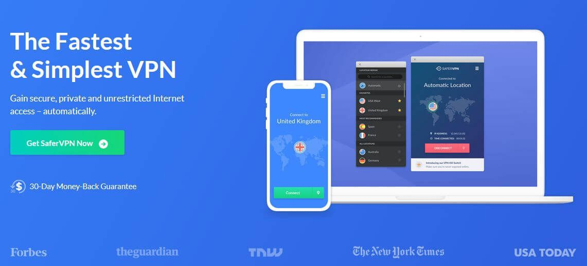

SaferVPN Review
8.5
Good
Our verdict: Using a VPN for gaming? Look no further than SaferVPN. Low latency scores mean this service has been optimized with you in mind. Never lose your advantage due to lag and delays across the network.

Summary Review
SaferVPN is a refreshing choice for anyone in the market for a secure, fast, and user-friendly VPN service. First of all, they are offering a 24-hour free trial with no credit card required. Set up is fast and easy and you can have the desktop application running on your laptop in just a matter of minutes. It doesn’t have any revolutionary features or anything but it gets all the basics right, plus you will love its attractive design both in its desktop and mobile applications. Offering strong encryption, fast connection speeds, a large network, and good customer service, it really has the potential to be one of the top players in the industry.
Privacy / Anonymity
SaferVPN has a kill switch feature that shuts down your internet session as soon as the VPN drops. This is great for protecting your identity and preventing any IP leaks. Claiming to be a full no-logs VPN service provider, they do not log your source IP address, DNS queries, VPN IP address, personal data, browsing history, or metadata. This means that you can “browse like a ghost, anytime, anywhere”. This is great news for those wary over the omnipresent Big Brother.
Streaming and Torrenting
If you are looking for a VPN service primarily for streaming and torrenting then you might be a bit disappointed. Sure, it is able to bypass a range of geoblocked sites but it only has about 30% success rate for Netflix. We were able to connect easily using its “US streaming” server but didn’t have much luck with its US East server. Both Canadian and UK server were also blocked although a server in the Netherlands worked. Overall, its pretty hit and miss and Netflix is also noticeably absent on its website page that talks about unblocking websites. Instead, they have listed Facebook, Twitter, Wikipedia, Youtube, WhatsApp, and Google.
Torrenting is also very limited which is a surprise, considering their huge collection of servers. Would you believe that out of its more than 700 servers, they only have one server optimized for torrenting and P2P transfers? If you use a VPN for any other purposes besides streaming and torrenting then you should be good with SaferVPN, but we understand how this can be a total deal-breaker for some.
Speed and Reliability
Speed and performance are where SaferVPN excel, as we didn’t notice any significant decline in the upload speed while connected to its server. It boasts of blazing fast speed so we set out to test this by connecting to several of its servers. We started with a base speed of 97.81 Mpbs for download and 52 Mbs upload speed. Connecting to the US server resulted in a download speed of 57. 03 Mbps and an upload speed of 23.07 Mbps. A server in the EU gave us a download speed of 79.01 Mbps and a 27.87 Mbps upload speed. Not bad at all. Lastly, we tried connecting to a server in Asia which is halfway across the world and we still got a download speed of 1.29 Mbps which is good enough for day to day browsing and chatting, but not much else...
Platforms and Devices


SaferVPN works beautifully on all major platforms such as Windows, Mac, iOs, and Android. It also supports Firefox, Linux, and other routers. Users will appreciate the simplicity of the apps while the more advanced users will appreciate that basic VPN configuration can be updated within the application. SaferVPN’s Chrome extension got everyone talking about it, as its the first of its kind in the market. It really opens up a world of opportunities having good VPN protection while browsing and maintaining a generic connection for torrent traffic. It’s also a great option for beginners because it literally takes just a single click to set everything up from installation to connection!
Server Locations
SaferVPN currently has over 700 servers located in 34 different countries which should be more than enough for the average user. Sure, other vendors may offer a more extensive coverage but if you’re after access to more exotic locations other than the US and Western Europe, SaferVPN is your best bet. They have servers in the Middle East and Africa as well as in Asian countries like Thailand and India.


Customer Service
SaferVPN’s support page contains the most common support questions on connectivity and security troubleshooting, billing, VPN features, and account, along with general questions and FAQ’s. You will also find step-by-step tutorials and quick reference guides listed by platforms which is very convenient. On top of that, there is a live chat button integrated on their website which is very helpful if you need instant support.
Pricing
Boasting of above-average download speeds, you would think SaferVPN would not be budget-friendly. Wrong. Not only do they back their plans up with an extensive 30-day money-back guarantee but their yearly plans are relatively cheap. Their month-to-month plan is a bit pricey at $12.95 per month but you can get the best value by signing up to a longer-term plan. Paying upfront for a year lowers the monthly fee to $5.49 while a 3-year plan means you’ll only be paying $2.50 per month!
SaferVPN User Reviews
- "When I had a problem, the online agent came up with a solution quickly and efficiently, problem resolved."
- "Very efficient, clearly explained , knowledgable and most helpful. Excellent service"